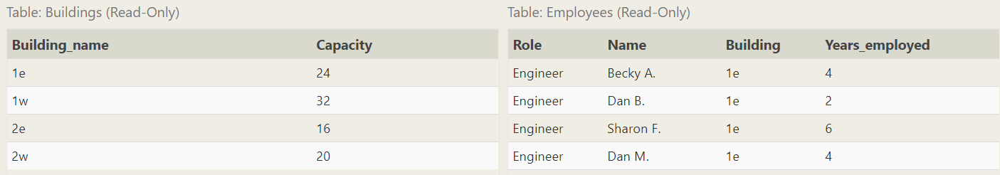

Basic of SQL
一月份的时候有一个考察，但是当时连一个很简单的语句都不会写了，之后就在SQLBolt上进行了一个回顾，这里进行记录，以后方便随时回来查看。
1. SELECT
1 | SELECT * FROM table_name; |
2. Queries with constraints
- WHERE clause
1
2
3SELECT column,...
FORM table
WHERE condition
| Operator | SQL Example |
|---|---|
| BETWEEN … AND … | clo_name BETWEEN 0.5 AND 1.5 |
| NOT BETWEEN … AND … | clo_name NOT BETWEEN 2000 AND 2010 |
| IN (…) | clo_name IN (1, 3, 5) |
| NOT IN (…) | col_name NOT IN (1, 3, 5) |
| Operator | Condition | Example |
|---|---|---|
| LIKE | Case insensitive exact string comparison | col_name LIKE ‘abc’ |
| NOT LIKE | Case insensitive exact string inequality comparison | col_name **NOT LIKE ** ‘abc’ |
| % | Match(only with LIKE or NOT LIKE | col_name LIKE ‘%hello%’ |
| _ | Used to match a single character(only with LIKE or NOT LIKE) | col_name LIKE “AN_” |
| IN (…) | String exists in a list | col_name IN (“A”, “B”) |
| NOT IN (…) | String does not exit in a list | col_name NOT IN (“C”, “E”) |
1 | SELECT column,... |
3. Filtering and sorting Query results
- Unique results
1
2
3SELECT DISTINCT column, another_column, ...
FROM table_name
WHERE condition(s) - Ordering results
1
2
3
4
5% Select query with ordered results
SELECT column, another_column, ...
FROM table_name
WHERE condition(s)
ORDER BY column ASC/DESC; - Limiting results to a subset
1
2
3
4
5
6% Select query with limited rows
SELECT column, another_column, ...
FROM table_name
WHERE condition(s)
ORDER BY column ASC/DESC
LIMIT num_limit OFFSET num_offset % offset偏移量
eg. List the last four Pixar movies released (ordered from most recent to least)
1 | SELECT * FROM movies |
eg. List the next five Pixar movies sorted alphabetically
1 | SELECT * FROM movies |
4. Multi-table queries with JOINs
JOIN clause
- INNER JOINA process that matchs rows from the first table and the second table with
1
2
3
4
5
6
7
8% Select query with INNER JOIN on multiple tables
SELECT column, another_table_column, ...
FROM mytable
INNER JOIN another_table
ON mytable.id = another_table.id
WHERE condition(s)
ORDER BY column, ... ASC/DESC
LIMIT num_limit OFFSET num_offset;
have the same key to create a result row with combined columns from both
tables.
eg.
1 | SELECT title, rating |
5. OUTER JOINs
1 | %Select query with LEFT/RIGHT/FULL JOINs on multiple tables |
When joining table A to table B, a
LEFT JOINsimply includes rows from A regardless of whether a matching row is found in B. TheRIGHT JOINis the same, but reversed, keeping rows in B regardless of whether a match is found in A. Finally, aFULL JOINsimply means that rows from both tables are kept, regardless of whether a matching row exists in the other table.
eg. List all buildings and the distinct employee roles in each building (including empty buildings)

1 | SELECT DISTINCT building_name, role FROM buildings |
6. A short note on NULLs
Test a column for NULL values in a WHERE clause by using either IS NULL or IS NOT NULL constraint.
1 | %Select query with constraints on NULL values |
eg.
Find the names of the buildings that hold no employees.
1 | SELECT DISTINCT building_name |
此题需要仔细思考一下
7. Queries with expressions
1 | % Select query with expression aliases |
1 | % Example query with both column and table name aliases |
8. Queries with aggregates(Pt.1)
1 | % Select query with aggregate function over all rows |
- Common aggregate functions
| Function |
|---|
| COUNT(*) |
| MIN(column) |
| MAX(column) |
| AVG(column) |
| SUM(column) |
- Grouped aggregate functions
1 | % Select query with aggregate functions over groups |
The GROUP BY clause works by grouping rows that have the same value in the column specified.
9. Queries with aggregates (Pt. 2)
1 | % Select query with HAVING constraint |
The HAVING clause constraints are applied to the grouped rows.
The
HAVINGclause constraints are written the same way as theWHEREclause constraints.
eg. Find the total number of years employed by all Engineers
1 | SELECT role, SUM(years_employed) |
result
10. Order of execution of a Query
1 | % Complete SELECT query |
11. Inserting rows
Inserting new data
- Insert statement with values for all columns
1 | INSERT INTO table |
- Insert statement with specific columns
1 | INSERT INTO table |
注意string格式的双引号
12. Updating rows
Update existing data
- Update statement with values
1 | UPDATE table |
It’s recommended that you run the constraint in a SELECT query first to ensure that you are updating the right rows.
13. Deleting rows
Delete data from a table in the database
- Delete statement with condition
1 | DELETE FROM table |
It’s recommended that you run the constraint in a SELECT query first to ensure that you are removing the right rows.
14. Creating tables
- Create table statement
1 | CREATE TABLE IF NOT EXISTS table_name ( |
Table data types
| Data type | Description |
|---|---|
| INTEGER, BOOLEAN | |
| FLOAT, DOUBLE, REAL | precise numerical data |
| CHARACTER, VARCHAR, TEXT | |
| DATE, DATETIME |
Table constraints
| Constraint | Description |
|---|---|
| PRIMARY KEY | This means that the values in this column are unique, and each value can be used to identify a single row in this table. |
| AUTOINCEREMENT(自增) | For integer values, this means that the value is automatically filled in and incremented with each row insertion. |
| UNIQUE | The values in this column have to be unique |
| NOT NULL | |
| FOREIGN KEY | This is a consistency check which ensures that each value in this column corresponds to another value in a column in another table. |
eg.
1 | CREATE TABLE movies ( |
15. Altering tables
Adding columns
1 | % Altering table to add new column(s) |
Removing columns
1 | % Altering table to remove column(s) |
Renaming the table
1 | % Altering table name |
16. Dropping tables
- Drop table statement
1 | DROP TABLE IF EXISTS table_name; |
If you have another table that is dependent on columns in table you are removing (for example, with a FOREIGN KEY dependency) then you will have to either update all dependent tables first to remove the dependent rows or to remove those tables entirely.
参考文档
[1] SQLBolt